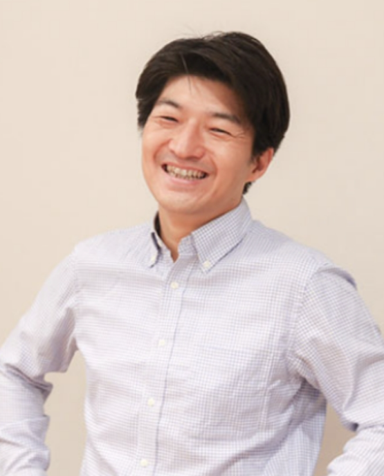
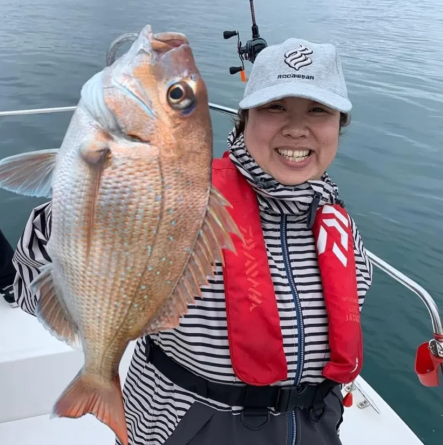
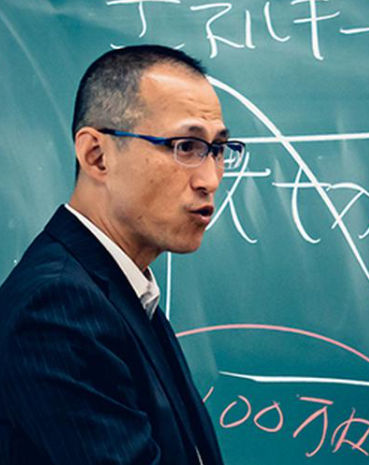
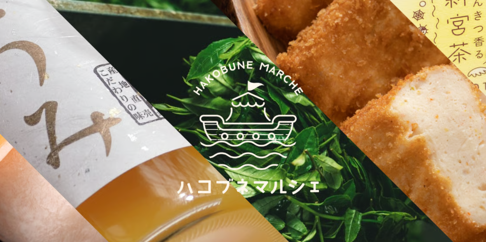
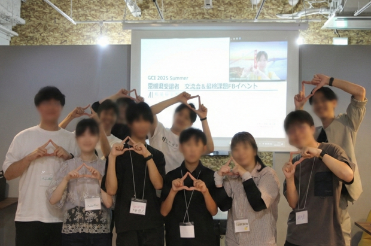
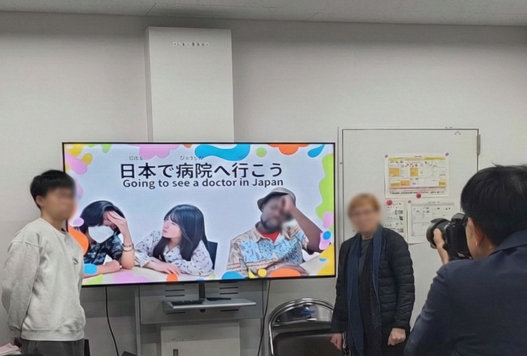
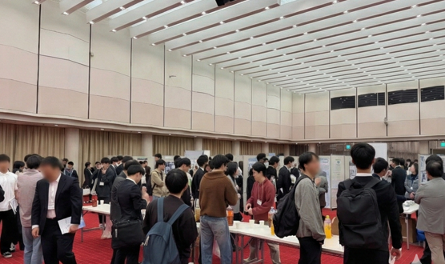

牧野 真雄
CEO。組織開発の知見を基に、経営判断と全体戦略の設計を担います。

私たちは、机上の検討を長く続けるのではなく、 現地調査・仮説設計・実装・検証・改善提案を 4週間で一気に回します。 重要なのは、ただ早いことではなく、 毎週の実行で学習を重ね、次の打ち手に即反映すること。 「いつか動く」ではなく、今週動いて結果を出すことを徹底しています。


CEO。組織開発の知見を基に、経営判断と全体戦略の設計を担います。

COO。産学連携の実務経験を生かし、現場実装とプロジェクト推進を担います。

CTO。技術と研究の観点から、実装内容の妥当性と品質を監修します。

セキ社で「事業者（農家・加工業者）の困りごとをECで解決する」方針が定まり、その課題感に共感した起業塾生4名がセキ社員と共に ECサイトを立ち上げました（2024年10月）。このマッチングは胡さんが先導。その後はSNSなどの広報、商品掲載の営業、 ECサイトと商品ページの整理を役割分担で運用。2025年4月には二期生募集を学生主導で実施し、約6名を新規に確保。 現在も分担運営を継続しています。

データサイエンス学習の孤独と継続課題に対し、対面勉強会と属性を越えた交流設計、インターン接続を実装。 学びを「続けられる環境」と「地域で実践できる場」に変え、地域課題解決へスキルを還元する基盤を形成しました。

教育コンテンツ制作における進行管理と品質担保体制の不在に対し、制作PMO、スケジュール管理、品質チェック、 納品管理を一体で実装。プロジェクト管理表・品質基準書・納品レポートを整備し、継続運用へ移行しました。

属人化していた大規模イベント運営に対し、事務局運営、参加者管理、当日オペレーション、記録作成までを体系化。 運営マニュアルと振り返りデータを整備し、次年度も再現可能な継続運営体制へ移行しました。